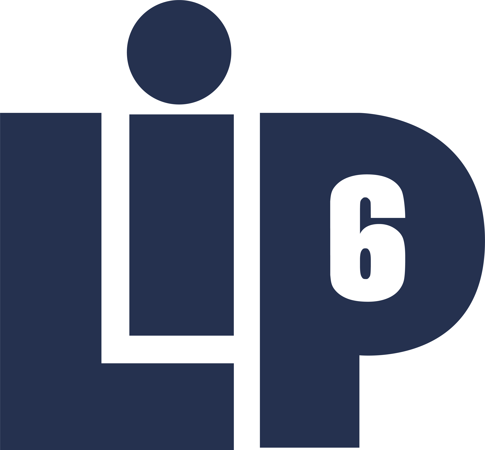
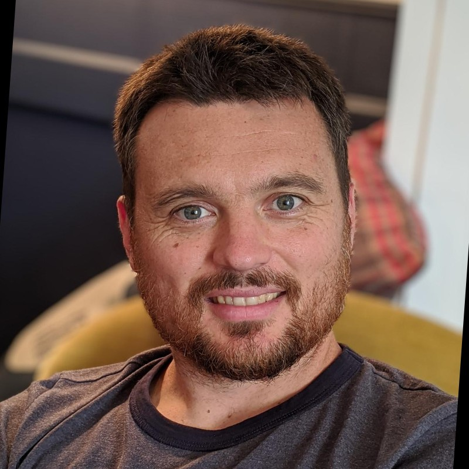
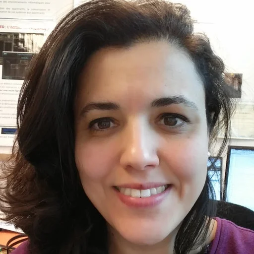
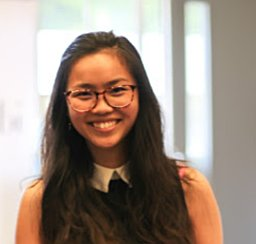
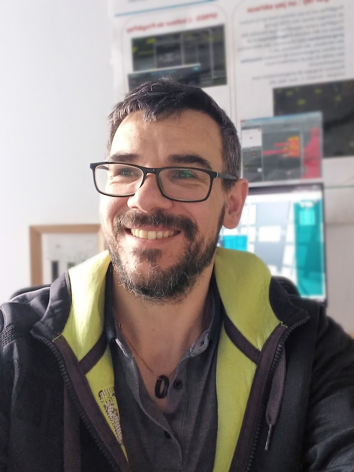
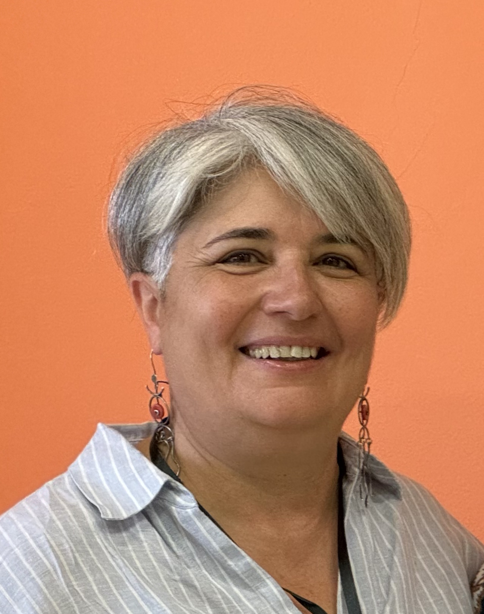
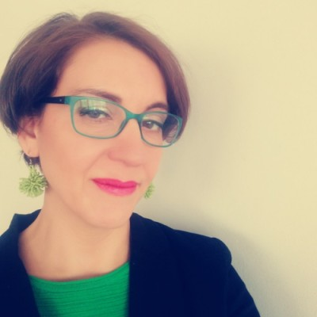
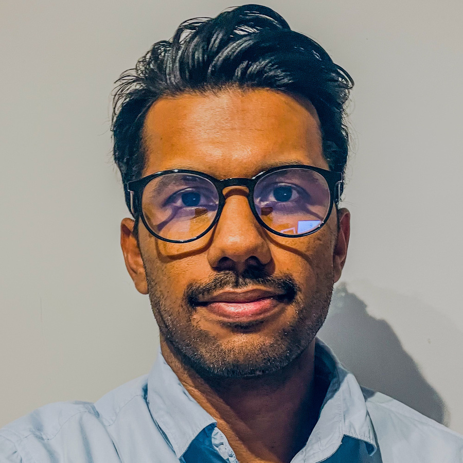
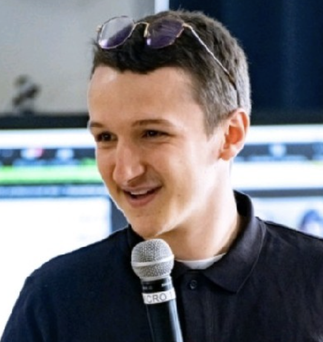

Organizing Institutions

3rd Workshop on Artificial Intelligence with and for Learning Sciences.
Theme: Responsible
and Inclusive Use of AI in Education.
WAILS 2026 is the 3rd edition of the Workshop on Artificial Intelligence with and for
Learning Sciences. Building on two successful editions (Salerno 2024, Cagliari 2025), this year focuses
on the responsible, ethical, and equitable use of AI in educational contexts.
If AI makes learning easier, are we still learning or merely optimizing task completion?
AI systems can support reasoning, creativity, and decision-making. Yet they can also obscure
understanding, reinforce bias, and reduce cognitive effort.
WAILS 2026 is grounded in a simple premise:
AI should not replace thinking, it should make thinking more visible, critical, and meaningful.
We invite the community to critically examine and shape the role of AI in education through evidence,
design, and theory.
Transparency, explainability, and accountability of AI-powered learning tools.
Fostering fair and equitable AI-driven learning for all.
Fostering learner agency and keeping humans at the center of AI-driven education.
Fostering inclusion through AI-powered game-based learning.
Exploring sociological, psychological, philosophical, and policy dimensions of AI in education.
Developing curricula, pedagogies, and teacher training for responsible AI education.
The workshop brings together researchers and practitioners from computer science, education, cognitive science, psychology, ethics, economics, human-computer interaction, and social sciences.
We welcome contributions on (but not limited to) the following topics. Submissions may address questions such as: What does it mean to learn in the age of AI? When does AI augment learning, and when does it replace it? What skills remain distinctly human in an AI-augmented world? How do we define learning success when AI completes tasks for students? How do we evaluate the long-term impact of AI on learning outcomes? How does AI change the nature of creativity, problem-solving, and critical thinking? How do we ensure AI tools do not reinforce existing inequalities?
Novel findings, methods, or theoretical frameworks. Up to 12 pages (excl. references), Springer LNCS format.
Deadline: TBAWork-in-progress, position papers, and preliminary results. Up to 6 pages (excl. references).
Deadline: TBAPhD students present ongoing research and receive feedback from senior researchers and peers.
Deadline: TBAConfirmed keynote speakers will be announced progressively. Stay tuned.
A multidisciplinary team committed to a fair, rigorous, and inclusive workshop.








